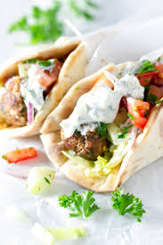

INGREDIENTS
- 1/4 cup chopped red onion
- 1 tablespoon minced garlic
- 1 tablespoon dried marjoram
- 1 tablespoon ground dried rosemary
- 2 teaspoons kosher salt
- 1/2 teaspoon freshly ground black pepper
- 1 pound 93%-lean ground beef
- 1 pound ground lamb

INSTRUCTIONS
- Preheat oven to 350 degrees F (175 degrees C).
- Process red onion in a food processor until finely minced.
- Scoop onion into a piece of cheesecloth.
- Squeeze as much moisture from the onion as possible.
- Return onion to food processor; add garlic and process until the garlic is well integrated.
- Blend marjoram, rosemary, kosher salt, and black pepper into the onion mixture.
- Gradually blend ground beef and ground lamb with the onion and seasoning mixture.
- Firmly pack the meat mixture into a loaf pan, assuring no air pockets are trapped in the meat.
- Bake in the preheated oven until no longer pink in the center, about 75 minutes.
- An instant-read thermometer inserted into the center should read at least 175 degrees F.
- Drain grease and slice thinly to serve.